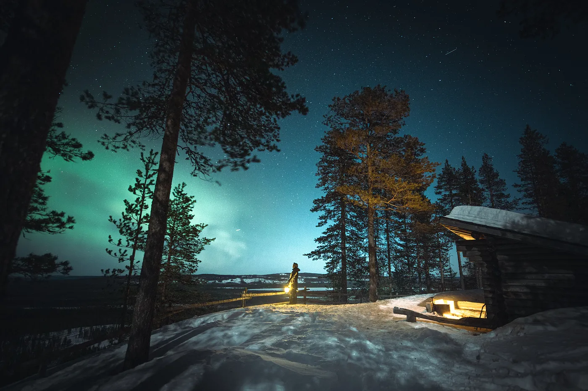

Finland, why you gotta be so cool?
Intrigued by exotic Finland, joining online communities and connecting with Finns is boosted through video games and YouTube.
If you ever heard about Finland, you might have pictured a hot sauna or really cold landscapes in the North of Europe. But did you know this country is considered the happiest country in the world (since 2018), is the home of Angry Birds, the famous Nokia multinational, or that Darude (the DJ from the famous song Sandstorm) is also Finnish?
Getting its independence from Russia on December 6th of 1917, the land of the thousand lakes attracted more than 3 million tourists in 2019 and by 2028, tourism revenue is expected to exceed 24 billion euros according to Statista. “Best time to visit Finland” is one of the most popular queries on Google trends internauts search for alongside the beautiful Northern Lights.
From worldwide known bands as Nightwish, Apocalyptica, The Rasmus, Lordi (winners of Eurovision 2006), Blind Channel (finalists at Eurovision 2021), HIM, or rising artist Rita Behm, to Formula One drivers Kimi Räikkönen or Valtteri Bottas (an interesting read here), to literature classics like The Moomins, to popular TV series Bordertown or Deadwind, this is only a subjective short enumeration of some of the gifted talents born in such an enchanting place.
Because the years 2020 and 2021 were reshaped amid an unprecedented pandemic, I thought it could be interesting to quickly look at two specific ways people connect to each other and can possibly (have) become captivated by Finland forming communities within the online world: games and YouTube content-creation.
Games
When it comes to the subject of video games or web development in general, Finland has a great history of innovators and visionaries who contributed to some of the most popular games we know nowadays. Its video gaming culture is unique and you can easily find online videos which will certainly make you even more curious about this land.
In the words of the Finnish YouTuber Qzeq who keeps growing an international audience with fun gaming-related content, and is one of the most followed TikTok creators on the matter,
“Schools usually have voluntary IT classes for those interested but a big part of the Finnish video gaming scene has its roots in the ‘90s demoscene where computer enthusiasts would meet up at “demo parties” to show off their creations.
Finland has a reputation in car rallying and is even called “the fastest nation in the world” which is prominently present in some Finnish gaming hits like the FlatOut series and Hill Climb Racing. I think one of our biggest impacts for the world could have helped opening the mobile gaming market in the early 2010s with games like Angry Birds and Clash of Clans?
Overall, I think what makes Finnish games special to me is the soul that’s put to them. Even the hits haven’t always been super polished but their atmosphere and gameplay never fail to deliver.”
Niklas is currently studying Nursing in Turku. With a keen interest towards social behavior and human to human relations, he has been working with online communities for over a decade, mostly with content creation, and has been following the Finnish tech industry history.
“Why do we Finns create solutions that are often described as top work? There’s definitely not only one correct answer, but mine makes a great story at least.
Mother nature hasn’t always been the kindest with us. Back in the days when winters still were long and ruthless it was a matter of life and death: we needed to innovate in order to make it through the next 6 months. This same routine of hard times and innovative solutions keeps repeating with wars, economic depression and most recently the pandemic. Now, when it comes to web development and online communities, I can definitely see the same routine. Finland is a country with (stereotypically) few social encounters and long distances. However we all need social life and experiences with other people, so what could be the solution?
Yeah, tech. During the depression in the 1990s many people lost their jobs, so they had to come up with something new: hard times and innovation, some could say. Internet and technology related to it was gradually making its breakthrough, so why not go with it.
Technology tends to be recognized only by mobile phones, computers and televisions, but in reality it’s so much more: agriculture, automotive and manufacturing in general, for example. Finland already had a good ground with those three example technologies, so the transition to what we know as the “modern technology” was not a big thing.
I wouldn’t be a Finn if I didn’t bring up Nokia. It was a fairytale of modern technology, and has a lot to do with communities as well; it’s captured in their slogan even today: connecting people.
Modern technology can be seen as advanced war tech, chemical weapons and various other not-so-funny things that nations develop in order to protect themselves — and to show off. That’s the total opposite of what Finland has been doing: tech web development is always on our side, and we do it to give others, not to take away. All this combined, creates a calm and relaxed atmosphere for the whole nation, which naturally leads to great achievements also in technology. So that’s Finland for you.”
YouTube
Have you heard about Joni and Pete? Often asked if they’re brothers, the two friends from Helsinki started making comedy content back in November 2018 after getting traction on Reddit with their short comedy sketches. Since then, they’ve expanded their audience to thousands of followers and counting. Their most watched videos have more than 3 million views and include Finnish cultural differences and popular memes.
The Finnish comedy duo isn’t new to YouTube though. In 2009 they launched the legendary skateboarding series at SkateCoolSkeittaa, and from there on have been learning the ins and outs of content creation.
Alongside, they have built an inclusive community on Discord.
“Our community in Discord has grown large and we’ve seen diverse discussions not only about Joni & Pete’s content, but from video games to languages and cultures. You should join, if you want to meet like-minded people from all around the world!”
As for a Finnish travel advice, the duo gives us one:
“Finland has a lot to offer, please consider going outside Helsinki if you come to visit!”
Learning about Finland was never easier on the biggest online video platform with more than 2 billion users worldwide. Reviews about how is life like in Finland, daily and silent vlogs, how to survive the winter or the country’s education system (another interesting read here), are among the top recommended topics.
If you are interested in learning Finnish, want to know how to make Finnish friends, or are considering moving to Finland, HerFinland, Aleksi Himself, KatChats, Ihana Pon, DaveCad, or Finnished are a few of the most Finntastic teachers out there. WordDive is also great and, made in Finland.
Special thanks to Qzeq, Niklas, Joni and Pete.
To Miska, Janne, and
Aku always there to answer random questions about Finland. Not forgetting
Tomi or Eevertti,
Hyvää itsenäisyyspäivää!
Thanks for reading
this far.